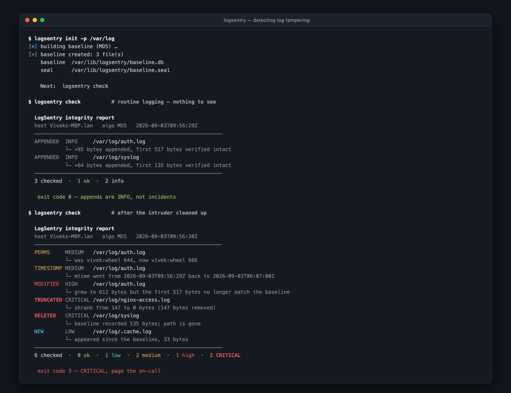
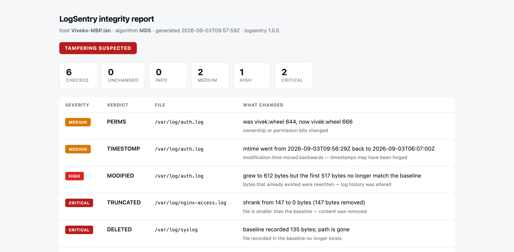

Detects tampering with log files — rewrites, truncation, deletion and timestamp forgery — using nothing but Bash and the utilities already on the box.
When someone breaks into a host, editing /var/log/auth.log is
step one of covering their tracks. The obvious defence — hash the files, compare later —
falls apart on the one kind of file it is needed for.
md5sum -c auth.log.md5 fails every few seconds, because log files
grow by design. sshd writes to it. sudo writes to it.
cron writes to it.
So the alert fires constantly, somebody mutes it "until we have time to tune it", and nobody ever has time. When it finally matters, the channel is off.
Given that the file was S bytes and hashed to H at baseline time — does the first S bytes of the file today still hash to H?
If yes, everything already written is intact and the file was only appended to. No alert. If no, something rewrote history, and that is not a thing well-behaved daemons do.
That single distinction is the difference between a tool you deploy and a tool you mute.
baseline [ 517 bytes, md5 = 4f3a…9c ] append [ 517 bytes, md5 = 4f3a…9c ][ 95 new bytes ] prefix matches → INFO rewrite [ 517 bytes, md5 = b81e…07 ][ 95 new bytes ] prefix differs → HIGH truncate [ 190 bytes ] file shrank → CRITICAL

| Verdict | Severity | What actually happened | Exit |
|---|---|---|---|
| APPENDED | INFO | New lines added, earlier bytes verified intact — normal logging | 0 |
| ROTATED | INFO | New inode with an archived copy alongside — logrotate did its job | 0 |
| NEW | LOW | A file appeared in a monitored directory since the baseline | 1 |
| PERMS | MEDIUM | Mode, owner or group changed | 1 |
| TIMESTOMP | MEDIUM | mtime moved backwards — timestamps were forged | 1 |
| MODIFIED | HIGH | Bytes that already existed were rewritten — log history was altered | 2 |
| TRUNCATED | CRITICAL | The file shrank — a partial or total log wipe | 3 |
| DELETED | CRITICAL | A baselined file is gone | 3 |
| SEAL | CRITICAL | The baseline itself was edited after it was sealed | 3 |
The parts that decide whether a security tool survives contact with production.
On a host you have started to distrust,
pip install is not a step you get to take. Bash plus what the OS ships.
stat flags and digest tools differ
across platforms. CI runs the suite on Ubuntu and macOS, so the claim is tested.
0 clean, 1 low, 2 high, 3 critical. Cron and systemd act on the result without parsing a line of output.
Console, ECS-shaped JSONL, syslog via
logger, Slack/Teams via curl, email via mail.
The attacker's next move is editing the baseline. Optional HMAC-SHA256 with the key held off the host.
Sourcing would hand root to anyone who can write the config. Parsed by hand, unknown keys rejected, regression-tested.
No installation required — it runs straight from a clone.
# Clone and watch it catch a simulated intrusion, in a sandbox git clone https://github.com/Dc0der-X/Log-File-Integrity-Monitor.git cd Log-File-Integrity-Monitor ./demo/demo.sh # Then point it at something real sudo ./bin/logsentry init -p /var/log/auth.log -p /var/log/syslog sudo ./bin/logsentry check # Install with a scheduler (detects systemd, launchd or cron) sudo ./install/install.sh --with-timer
init records the baseline. check compares against
it. That is the whole mental model.

Four deep-dive documents, not an afterthought.